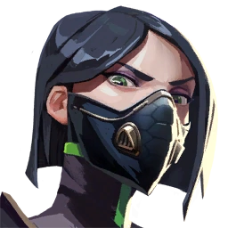

Sabine Callas
Scientist
Viper is a VALORANT agent who deals with poison and acid, burning down and suffocating her enemies. She uses fuel to activate her powerful abilities Poison Cloud and Toxic Screen to melt passing targets and block vision. The fuel gauge recharges over time, allowing Viper to control areas for extended time